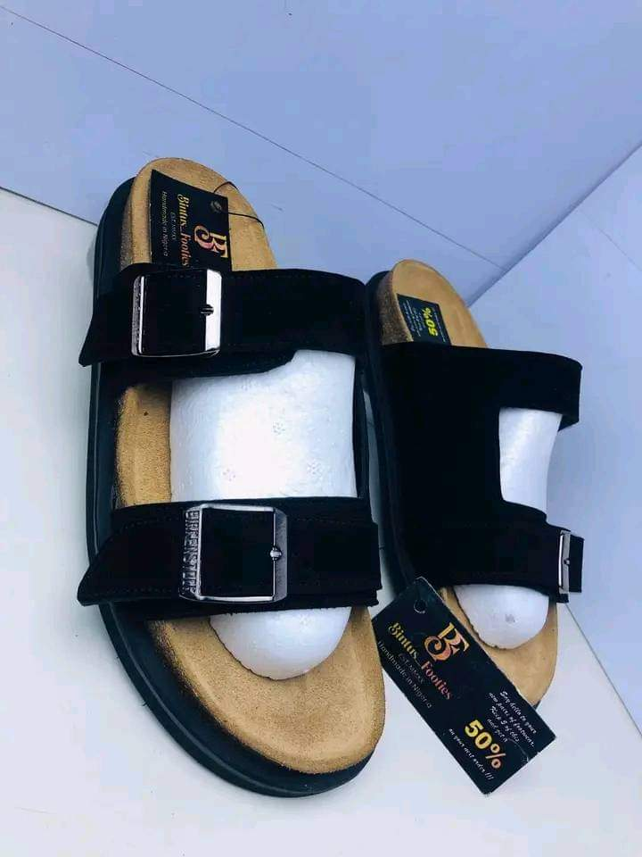

When you can walk into any store and take your pick from among hundreds of different colors, sizes and styles of shoes, it’s easy to take good footwear for granted. However, this is not the case for many people living in impoverished regions like the Caribbean, West Africa and Central America. In fact over 600 million people worldwide don’t own a single pair of shoes. This is very unfortunate because the importance and benefits of shoes can’t be overlooked. Having protective footwear with the correct fit is essential for overall health and comfort
1. Shoes Prevent Foot Problems Going without shoes for too long or wearing ill-fitting shoes can cause: Corns Ingrown toenails Fungal nail infections Athlete’s foot Over time, more serious problems can develop. Bunions can form, resulting in pain and disfigurement of the feet. A prolonged lack of proper foot support can cause arches to collapse, and can cause serious joint pain. 2. Shoes Alleviate Pain Part of the job of shoes is to absorb impact as we walk, but bad shoes (or no shoes) can throw the whole body out of alignment. If shoes don’t have enough padding or don’t allow for an even stride, pain is an almost inevitable side effect. The ankles, knees, hip joints and lower back are all affected by bad shoes. Widespread pain limits mobility, making it difficult to perform normal daily tasks. 3. Shoes Protect Against Infections In many areas of the world, sanitation is poor and disease is widespread. Going without shoes in areas without proper disposal methods for animal and human waste makes people susceptible to parasitic worms and other foot infections. These diseases can be debilitating or even lethal.
Going barefoot puts humans at risk for hookworm, tick bites and injuries. Stepping on broken glass or rusty nails, have a nasty encounter with a prickly bush or winding up with an itchy rash from poison ivy are also concerns. Most of us living in the United States are very lucky to have access to multiple pairs of good footwear, and we often stop wearing shoes before they are truly worn out. If you have old sneakers laying around in your closet consider hosting a GotSneakers fundraiser. You’ll collect wearable sneakers from your own collection as well as from friends, colleagues and other contacts. GotSneakers will pay you $1 per pair of sneakers collected and then they will be sent to impoverished nations where sneakers are badly needed. Learn more about starting your fundraiser today
Going barefoot puts humans at risk for hookworm, tick bites and injuries. Stepping on broken glass or rusty nails, have a nasty encounter with a prickly bush or winding up with an itchy rash from poison ivy are also concerns. Most of us living in the United States are very lucky to have access to multiple pairs of good footwear, and we often stop wearing shoes before they are truly worn out. If you have old sneakers laying around in your closet consider hosting a GotSneakers fundraiser. You’ll collect wearable sneakers from your own collection as well as from friends, colleagues and other contacts. GotSneakers will pay you $1 per pair of sneakers collected and then they will be sent to impoverished nations where sneakers are badly needed. Learn more about starting your fundraiser today